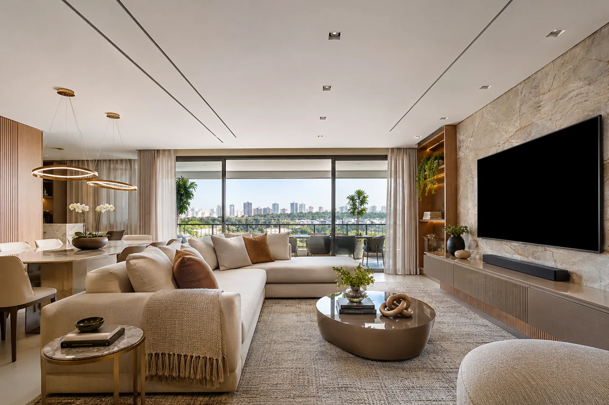

Um ambiente-base consistente, com objetos, iluminação e superfícies documentados.
FÁBRICA DE EXPERIÊNCIAS VISUAISNão imagine a cena.
Não imagine a cena.
Faça-a acontecer.
Do ambiente-base à animação cinematográfica: escolha um roteiro pronto, configure um motor de vídeo e valide o resultado antes de incorporá-lo ao catálogo.
01 · Preparar quadros02 · Comparar modelos03 · Aprovar vídeo04 · Integrar

Laboratório demonstrativo. A página prepara tarefas de IA e revisões locais, mas não executa gerações pagas nem guarda credenciais. Não inclua imagens privadas de clientes neste ambiente sem autorização. A produção real exige autorização da conta, imagens inicial/final corretas e processamento protegido no servidor. O primeiro piloto é a persiana do living.
01 / BIBLIOTECA
04 roteirosEscolha a experiência.
ARQUITETURA • 16:9SC01
LIVING INTEGRADO
Cinema em Casa
Persiana automática
02 / STORYBOARD
Transformação controlada.
Precisão primeiro. A câmera permanece fixa. Gere persiana, TV e iluminação separadamente; combine os trechos somente após validar posição, geometria, luz e continuidade.
03 / CONTROLE DE QUALIDADE
Revisão antes do cliente.
Assista ao resultado aqui
Selecione um MP4 gerado para revisar no seu navegador. O arquivo não será enviado por esta página.